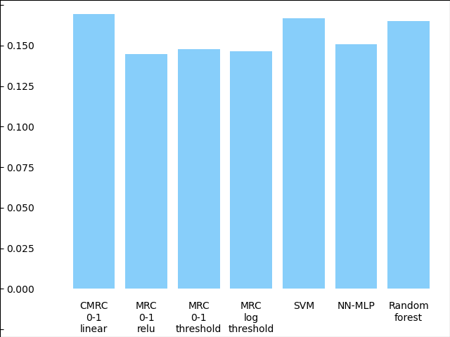
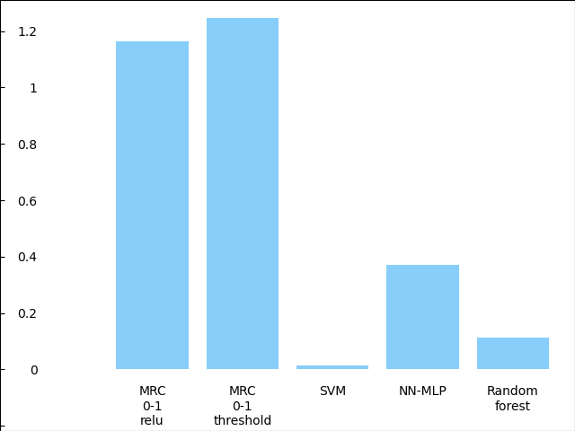
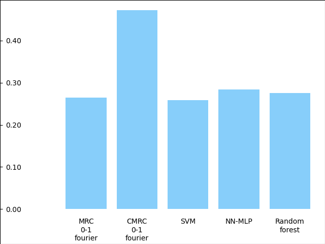
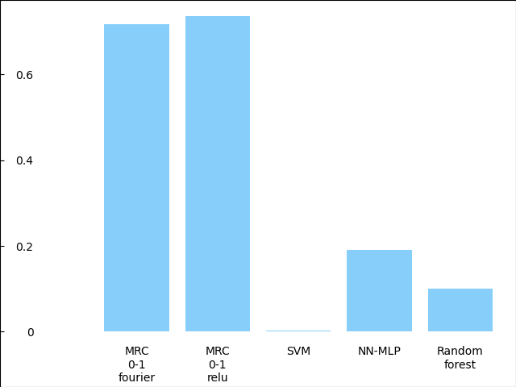

Note
Click here to download the full example code
Example: Comparison to other methods#
We are training and testing both MRC and CMRC methods with a variety of different settings and comparing their performance both error-wise and time-wise to other usual classification methods.
We will see that the performance of the MRC methods with the appropiate settings is similar to the one of other methods like SVC (SVM Classification) or MLPClassifier (neural network). Furthermore, with non-determinitic approach and loss 0-1, MRC method provides a theoretical upper and lower bound for the error that can be an useful non-biased indicator of the performance of the algorithm on a given dataset. It also can be used to perform hyperparameter tuning in a much faster way than cross-validation, you can check an example about that here.
We show the numerical results in three tables; the two firsts ones for all
the MRC and CMRC variants and the next one for all the comparison methods
in the deterministic and non-deterministic case respectively.
In these firsts tables the columns named ‘upper’ and ‘lower’ show the
upper and lower bound provided by the MRC method.
Note that in the case where loss = 0-1 these are upper and
lower bounds of the classification error while, in the case of loss=log
these bounds correspond to the log-likelihood.
Note that we set the parameter use_cvx=False. In the case of MRC classifiers this means that we will use nesterov subgradient optimized approach to perform the optimization. In the case of CMRC classifiers it will use the fast Stochastic Gradient Descent (SGD) approach for linear and random fourier feature mappings and nesterov subgradient approach for the rest of feature mappings.
# Import needed modules
import time
import matplotlib.pyplot as plt
import numpy as np
import pandas as pd
from sklearn import preprocessing
from sklearn.ensemble import RandomForestClassifier
from sklearn.model_selection import KFold
from sklearn.neural_network import MLPClassifier
from sklearn.svm import SVC
from MRCpy import CMRC, MRC
from MRCpy.datasets import load_credit, load_haberman
KFOLDS = 5
kf = KFold(n_splits=KFOLDS)
MRC and CMRC methods#
We are training and testing both MRC and CMRC methods with a variety of different settings; using 0-1 loss and logarithmic loss, using all the default feature mappings available (Linear, Random Fourier, ReLU, Threshold) and using both the non-deterministic and deterministic approach which uses or not, respectively probability estimates in the prediction stage.
def runMRC(X, Y):
df_mrc = pd.DataFrame(np.zeros((8, 4)),
columns=['MRC', 'MRC time', 'CMRC', 'CMRC time'],
index=['loss 0-1, phi linear',
'loss 0-1, phi fourier',
'loss 0-1, phi relu',
'loss 0-1, phi threshold',
'loss log, phi linear',
'loss log, phi fourier',
'loss log, phi relu',
'loss log, phi threshold'])
df_mrc_nd = pd.DataFrame(np.zeros((4, 4)),
columns=['MRC', 'MRC time', 'upper', 'lower'],
index=['loss 0-1, phi linear',
'loss 0-1, phi fourier',
'loss 0-1, phi relu',
'loss 0-1, phi threshold'])
for train_index, test_index in kf.split(X):
X_train, X_test = X[train_index], X[test_index]
Y_train, Y_test = Y[train_index], Y[test_index]
std_scale = preprocessing.StandardScaler().fit(X_train, Y_train)
X_train = std_scale.transform(X_train)
X_test = std_scale.transform(X_test)
for loss in ['0-1', 'log']:
for phi in ['linear', 'fourier', 'relu', 'threshold']:
row_name = 'loss ' + loss + ', phi ' + phi
# Deterministic case
startTime = time.time()
clf = MRC(loss=loss, phi=phi, random_state=0, sigma='scale',
deterministic=True, use_cvx=False
).fit(X_train, Y_train)
Y_pred = clf.predict(X_test)
error = np.average(Y_pred != Y_test)
totalTime = time.time() - startTime
df_mrc['MRC time'][row_name] += totalTime
df_mrc['MRC'][row_name] += error
startTime = time.time()
clf = CMRC(loss=loss, phi=phi, random_state=0, sigma='scale',
deterministic=True, use_cvx=False,
).fit(X_train, Y_train)
Y_pred = clf.predict(X_test)
error = np.average(Y_pred != Y_test)
totalTime = time.time() - startTime
df_mrc['CMRC time'][row_name] += totalTime
df_mrc['CMRC'][row_name] += error
if loss == '0-1':
# Non-deterministic case (with upper-lower bounds)
startTime = time.time()
clf = MRC(loss=loss, phi=phi, random_state=0,
sigma='scale',
deterministic=False, use_cvx=False,
).fit(X_train, Y_train)
Y_pred = clf.predict(X_test)
error = np.average(Y_pred != Y_test)
totalTime = time.time() - startTime
df_mrc_nd['MRC time'][row_name] += totalTime
df_mrc_nd['MRC'][row_name] += error
df_mrc_nd['upper'][row_name] += clf.get_upper_bound()
df_mrc_nd['lower'][row_name] += clf.get_lower_bound()
df_mrc = df_mrc.divide(KFOLDS)
df_mrc_nd = df_mrc_nd.divide(KFOLDS)
return df_mrc, df_mrc_nd
Note that the non deterministic linear case is expected to perform poorly for datasets with small initial dimensions like the ones in the example.
# Credit dataset
X, Y = load_credit()
df_mrc_credit, df_mrc_nd_credit = runMRC(X, Y)
df_mrc_credit.style.set_caption('Credit Dataset: Deterministic \
MRC and CMRC error and runtime')
df_mrc_nd_credit.style.set_caption('Credit Dataset: Non-Deterministic \
MRC error and runtime\nwith Upper and\
Lower bounds')
# Haberman Dataset
X, Y = load_haberman()
df_mrc_haberman, df_mrc_nd_haberman = runMRC(X, Y)
df_mrc_haberman.style.set_caption('Haberman Dataset: Deterministic \
MRC and CMRC error and runtime')
df_mrc_nd_haberman.style.set_caption('Haberman Dataset: Non-Deterministic MRC \
error and runtime\nwith Upper and \
Lower bounds')
SVM, Neural Networks: MLP Classifier, Random Forest Classifier#
Now, let’s try other usual supervised classification algorithms and compare
the results.
For comparison purposes. We try the same experiment using the Support Vector
Machine method using C-Support Vector Classification implemented in the
SVC
function, the Neural Network
method Multi-layer Perceptron classifier
and a Random Forest
Classifier.
All of them from the library scikit-learn.
def runComparisonMethods(X, Y):
df = pd.DataFrame(columns=['Method', 'Error', 'Time'])
error_svm = 0
totalTime_svm = 0
error_mlp = 0
totalTime_mlp = 0
error_rf = 0
totalTime_rf = 0
for train_index, test_index in kf.split(X):
X_train, X_test = X[train_index], X[test_index]
Y_train, Y_test = Y[train_index], Y[test_index]
std_scale = preprocessing.StandardScaler().fit(X_train, Y_train)
X_train = std_scale.transform(X_train)
X_test = std_scale.transform(X_test)
startTime = time.time()
clf = SVC(random_state=0).fit(X_train, Y_train)
Y_pred = clf.predict(X_test)
error_svm += np.average(Y_pred != Y_test)
totalTime_svm += time.time() - startTime
startTime = time.time()
clf = MLPClassifier(random_state=0).fit(X_train, Y_train)
Y_pred = clf.predict(X_test)
error_mlp += np.average(Y_pred != Y_test)
totalTime_mlp += time.time() - startTime
startTime = time.time()
clf = clf = RandomForestClassifier(
max_depth=2, random_state=0).fit(X_train, Y_train)
Y_pred = clf.predict(X_test)
error_rf += np.average(Y_pred != Y_test)
totalTime_rf += time.time() - startTime
error_svm /= KFOLDS
totalTime_svm /= KFOLDS
error_mlp /= KFOLDS
totalTime_mlp /= KFOLDS
error_rf /= KFOLDS
totalTime_rf /= KFOLDS
df = df.append({'Method': 'SVM', 'Error': error_svm,
'Time': totalTime_svm}, ignore_index=True)
df = df.append({'Method': 'NN-MLP', 'Error': error_mlp,
'Time': totalTime_mlp}, ignore_index=True)
df = df.append({'Method': 'Random Forest', 'Error': error_rf,
'Time': totalTime_rf}, ignore_index=True)
df = df.set_index('Method')
return df
# Credit Dataset
X, Y = load_credit()
df_credit = runComparisonMethods(X, Y)
df_credit.style.set_caption('Credit Dataset: Different \
methods error and runtime')
# Haberman Dataset
X, Y = load_haberman()
df_haberman = runComparisonMethods(X, Y)
df_haberman.style.set_caption('Haberman Dataset: Different \
methods error and runtime')
Comparison of MRCs to other methods#
In the deterministic case we can see that the performance of MRC and CMRC
methods in the
appropiate settings is similar to usual methods such as SVM and
Neural Networks implemented by the MLPClassifier. Best performances for MRC
method are usually reached using loss = 0-1 and phi = fourier or
phi = relu. Even though these
settings make the execution time of MRC a little bit higher than others it
is still similar to the time it would take to use the MLPClassifier.
Now we are plotting some figures for the deterministic case.
Note that
the options of MRC with loss = 0-1 use an optimized version of Nesterov
optimization algorithm, improving the runtime of these options.
# Graph plotting
def major_formatter(x, pos):
label = '' if x < 0 else '%0.2f' % x
return label
def major_formatter1(x, pos):
label = '' if x < 0 or x > 0.16 else '%0.3f' % x
return label
def major_formatter2(x, pos):
label = '' if x < 0 else '%0.2g' % x
return label
fig = plt.figure()
ax = fig.add_axes([0, 0, 1, 1])
labels = ['CMRC\n0-1\nlinear',
'MRC\n0-1\nrelu',
'MRC\n0-1\nthreshold',
'MRC\nlog\nthreshold',
'SVM', 'NN-MLP',
'Random\nforest']
errors = [df_mrc_credit['CMRC']['loss 0-1, phi linear'],
df_mrc_credit['MRC']['loss 0-1, phi relu'],
df_mrc_credit['MRC']['loss 0-1, phi threshold'],
df_mrc_credit['MRC']['loss log, phi threshold'],
df_credit['Error']['SVM'],
df_credit['Error']['NN-MLP'],
df_credit['Error']['Random Forest']]
ax.bar([''] + labels, [0] + errors, color='lightskyblue')
plt.title('Credit Dataset Errors')
ax.tick_params(axis="y", direction="in", pad=-35)
ax.tick_params(axis="x", direction="out", pad=-40)
ax.yaxis.set_major_formatter(major_formatter1)
margin = 0.05 * max(errors)
ax.set_ylim([-margin * 3.5, max(errors) + margin])
plt.show()

Above: MRCs errors for different parameter settings compared to other techniques for the dataset Credit. The ordinate axis represents the error (proportion of incorrectly predicted labels).
fig = plt.figure()
ax = fig.add_axes([0, 0, 1, 1])
labels = ['MRC\n0-1\nrelu',
'MRC\n0-1\nthreshold',
'SVM', 'NN-MLP',
'Random\nforest']
times = [df_mrc_credit['MRC time']['loss 0-1, phi relu'],
df_mrc_credit['MRC time']['loss 0-1, phi threshold'],
df_credit['Time']['SVM'],
df_credit['Time']['NN-MLP'],
df_credit['Time']['Random Forest']]
ax.bar([''] + labels, [0] + times, color='lightskyblue')
plt.title('Credit Dataset Runtime')
ax.tick_params(axis="y", direction="in", pad=-30)
ax.tick_params(axis="x", direction="out", pad=-40)
ax.yaxis.set_major_formatter(major_formatter2)
margin = 0.05 * max(times)
ax.set_ylim([-margin * 3.5, max(times) + margin])
plt.show()

Above: MRCs runtime for different parameter settings compared to other techniques for the dataset Credit. The ordinate represents the runtime measured in seconds.
fig = plt.figure()
ax = fig.add_axes([0, 0, 1, 1])
labels = ['MRC\n0-1\nfourier',
'CMRC\n0-1\nfourier',
'SVM',
'NN-MLP',
'Random\nforest']
errors = [df_mrc_haberman['MRC']['loss 0-1, phi fourier'],
df_mrc_haberman['CMRC']['loss 0-1, phi fourier'],
df_haberman['Error']['SVM'],
df_haberman['Error']['NN-MLP'],
df_haberman['Error']['Random Forest']]
ax.bar([''] + labels, [0] + errors, color='lightskyblue')
plt.title('Haberman Dataset Errors')
ax.tick_params(axis="y", direction="in", pad=-30)
ax.tick_params(axis="x", direction="out", pad=-40)
ax.yaxis.set_major_formatter(major_formatter)
margin = 0.05 * max(errors)
ax.set_ylim([-margin * 3.5, max(errors) + margin])
plt.show()

Above: MRCs errors for different parameter settings compared to other techniques for the dataset Haberman. The ordinate axis represents the error (proportion of incorrectly predicted labels).
fig = plt.figure()
ax = fig.add_axes([0, 0, 1, 1])
labels = ['MRC\n0-1\nfourier',
'MRC\n0-1\nrelu',
'SVM', 'NN-MLP',
'Random\nforest']
times = [df_mrc_haberman['MRC time']['loss 0-1, phi fourier'],
df_mrc_haberman['MRC time']['loss 0-1, phi relu'],
df_haberman['Time']['SVM'],
df_haberman['Time']['NN-MLP'],
df_haberman['Time']['Random Forest']]
ax.bar([''] + labels, [0] + times, color='lightskyblue')
plt.title('Haberman Dataset Runtime')
ax.tick_params(axis="y", direction="in", pad=-30)
ax.tick_params(axis="x", direction="out", pad=-40)
ax.yaxis.set_major_formatter(major_formatter2)
margin = 0.05 * max(times)
ax.set_ylim([-margin * 3.5, max(times) + margin])
plt.show()

Above: MRCs runtime for different parameter settings compared to other techniques for the dataset Haberman. The ordinate represents the runtime measured in seconds.
Upper and Lower bounds provided by MRCs#
Furthermore, when using a non-deterministic approach and loss = 0-1, the
MRC method provides us with Upper and Lower theoretical bounds for the
error which can be of great use to make sure you are not overfitting your
model or for hyperparameter tuning. You can check our
example on parameter tuning.
In the logistic case these Upper and Lower values are the theoretical bounds
for the log-likelihood.
The only difference between the deterministic and non-deterministic approach is in the prediction stage so, as we can see, the runtime of both versions is pretty similar.
Total running time of the script: ( 9 minutes 21.210 seconds)